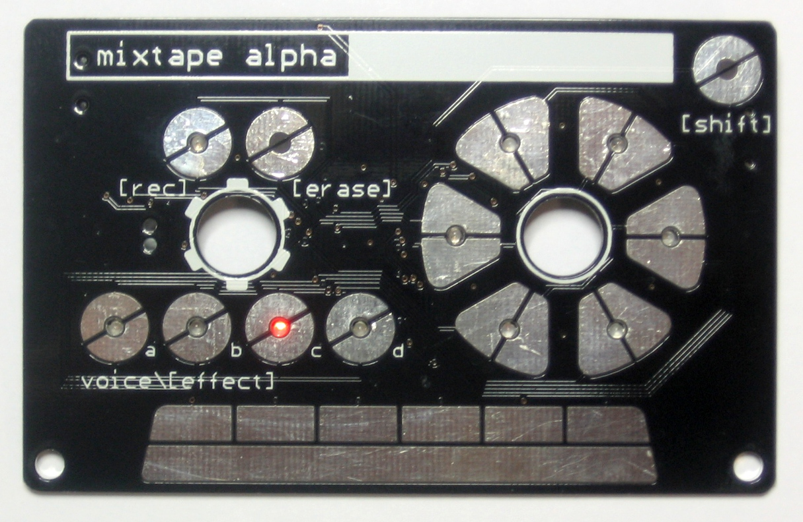

Credit-card sized Atmega328-based 4 voice synth.

It has a stylophone style input for continuous note generation, and 6 buttons for discrete notes. With 4 voices, 4 effects, and 5 note polyphony there is quite a range of expression. But, the best part is, you can record the songs you make, and trade mixtapes with your friends! Perhaps even better, it’s based on the ATmega328p, and can be hacked to make even crazier sounds than we came up with. More info at OML page
All DB data
- Name: Mixtape Alpha
- Author: Open Music Labs
- Link: http://wiki.openmusiclabs.com/wiki/MixtapeAlpha
- Demo: https://www.youtube.com/watch?v=TBudhbE61U4
- Picture: ../pics/mixtape-alpha.jpg
- Description: Credit-card sized Atmega328-based 4 voice synth.
- Notes: It has a stylophone style input for continuous note generation, and 6 buttons for discrete notes. With 4 voices, 4 effects, and 5 note polyphony there is quite a range of expression. But, the best part is, you can record the songs you make, and trade mixtapes with your friends! Perhaps even better, it’s based on the ATmega328p, and can be hacked to make even crazier sounds than we came up with. More info at OML page
- Artifacts: {“Schematic”=>true}{“PCB”=>true}{“BOM”=>true}{“FW”=>true}{“Docs”=>true}{“Enclosure”=>false}
- Tags: DigitalAVRKit
- Level: Intermediate
{kind=link}